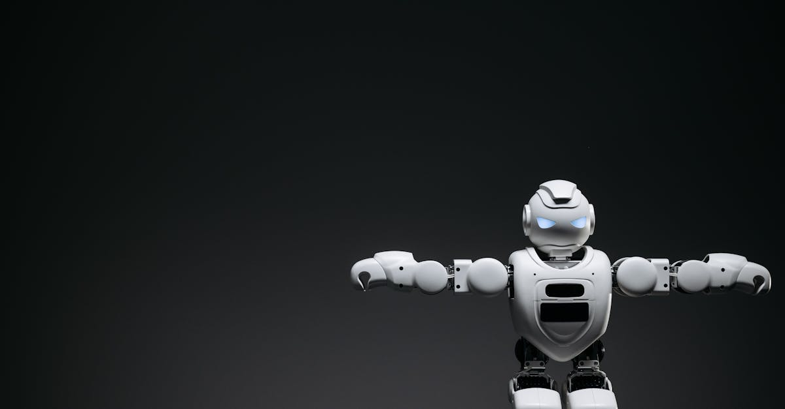

Steel Dynamics: Une Croissance Accélérée qui Surprend le Marché
L'industrie sidérurgique mondiale traverse une période de turbulence, mais certaines entreprises parviennent à naviguer avec succès dans ces eaux agitées. C'est le cas de Steel Dynamics Inc., qui vient de dévoiler des résultats financiers pour le premier trimestre dépassant largement les attentes des analystes. La société a enregistré la plus forte croissance de ses revenus depuis 2022, un exploit remarquable dans un contexte économique encore incertain. Cette performance spectaculaire est principalement attribuable à une combinaison gagnante : la hausse des prix de l'acier et un volume de livraisons d'acier record, atteignant 3,6 millions de tonnes. Ces chiffres ne sont pas anodins ; ils témoignent d'une demande soutenue et d'une gestion opérationnelle efficace. La résilience de Steel Dynamics dans un secteur cyclique est un signal fort pour les investisseurs. Mais au-delà de l'acier, comment ces mouvements macroéconomiques peuvent-ils influencer d'autres marchés, comme celui des devises ? La corrélation entre les matières premières, la force des entreprises industrielles et la volatilité des taux de change est un domaine clé pour les traders avisés, notamment ceux qui s'appuient sur des outils d'analyse sophistiqués.
👉 À lire : IA et Trading : Le Forex à l'épreuve des quiz Bloomberg
L'entreprise a non seulement vu ses revenus bondir, mais aussi son profit connaître un net rebond. Les détails précis de ces résultats, tels que publiés par Bloomberg Markets, confirment une tendance haussière qui pourrait se prolonger. La capacité de Steel Dynamics à anticiper et à capitaliser sur les fluctuations du marché de l'acier est une leçon précieuse. Dans un monde où l'information circule à la vitesse de l'éclair, la réactivité et l'analyse précoce des tendances sectorielles deviennent des atouts majeurs. Pour les acteurs du marché financier, comprendre les moteurs de la croissance d'une entreprise comme Steel Dynamics, c'est aussi décrypter des signaux potentiels pour d'autres classes d'actifs. L'acier, bien que fondamental, n'est qu'un maillon dans une chaîne économique complexe. La manière dont les bénéfices de ces entreprises se traduisent en flux de capitaux internationaux peut avoir des répercussions insoupçonnées sur le marché des changes.
👉 À lire : Détroit d'Ormuz : Navires testent la réouverture, l'incertitude persiste
Les Moteurs de la Hausse: Prix de l'Acier et Volumes Records
La performance exceptionnelle de Steel Dynamics repose sur deux piliers fondamentaux : l'augmentation des prix de l'acier et l'atteinte d'un volume de livraisons sans précédent. Le prix de l'acier, matière première essentielle pour de nombreuses industries (construction, automobile, fabrication), a connu une dynamique haussière significative. Plusieurs facteurs expliquent cette tendance : des contraintes d'approvisionnement persistantes, une reprise économique mondiale qui stimule la demande, et des politiques commerciales internationales qui peuvent influencer les flux de production et de consommation. Les analystes financiers suivent de près ces indicateurs, car ils sont souvent précurseurs de la santé économique globale. Pour Steel Dynamics, cela s'est traduit par une marge bénéficiaire plus élevée sur chaque tonne d'acier vendue.
Parallèlement, l'entreprise a réussi à expédier un volume record de 3,6 millions de tonnes d'acier au cours du trimestre. Cet exploit logistique et commercial démontre une capacité d'adaptation et une efficacité opérationnelle remarquables. Atteindre de tels volumes, surtout dans un contexte de chaînes d'approvisionnement parfois tendues, est un témoignage de la robustesse de l'infrastructure et de la stratégie de distribution de Steel Dynamics. Cette double dynamique – prix plus élevés et volumes accrus – a créé un effet de levier puissant sur les revenus et les profits. « C'est la synergie parfaite entre une demande forte et une capacité de production et de livraison optimisée », commente un analyste sectoriel fictif. Cette conjonction de facteurs positifs est exactement le genre de scénario que les algorithmes de trading les plus avancés sont conçus pour identifier et exploiter, en anticipant les mouvements de marché avant qu'ils ne deviennent évidents pour tous.
Implications pour les Investisseurs: Au-delà du Secteur Sidérurgique
La nouvelle de la croissance de Steel Dynamics ne résonne pas uniquement dans les cercles de l'industrie sidérurgique. Elle envoie des ondes de choc positives sur l'ensemble du marché financier, offrant des perspectives intéressantes pour les investisseurs. La solidité des résultats d'une entreprise industrielle majeure comme Steel Dynamics est souvent interprétée comme un baromètre de la santé économique globale. Une demande soutenue pour l'acier suggère une activité accrue dans des secteurs clés tels que la construction et la fabrication, qui sont eux-mêmes des indicateurs de la confiance des entreprises et des consommateurs.
Pour les investisseurs cherchant à diversifier leurs portefeuilles, cette performance met en lumière l'importance d'une analyse sectorielle approfondie. L'investissement dans des entreprises solides, capables de générer des bénéfices même dans des conditions difficiles, peut offrir une stabilité bienvenue. De plus, la manière dont Steel Dynamics gère ses coûts et optimise ses opérations peut servir de modèle. « Il ne suffit pas d'être dans le bon secteur ; il faut exceller dans son exécution », souligne un gestionnaire de fonds fictif. L'histoire de Steel Dynamics nous rappelle que la recherche de la performance passe par l'identification d'entreprises résilientes et bien gérées. Ces entreprises, par leur capacité à générer des flux de trésorerie solides, peuvent influencer positivement la valeur de leurs actions et, indirectement, la perception du risque sur les marchés financiers dans leur ensemble.
La question se pose alors : comment ces indicateurs macroéconomiques et la performance d'entreprises spécifiques peuvent-ils être intégrés dans une stratégie de trading plus large ? Les plateformes d'investissement modernes permettent de croiser une multitude de données, allant des rapports financiers d'entreprises aux indices de matières premières, en passant par les indicateurs économiques mondiaux. L'objectif est de construire une vision holistique du marché, où chaque donnée, comme celle concernant Steel Dynamics, peut être une pièce du puzzle.

Le Lien Subtil avec le Marché des Changes (Forex)
À première vue, les résultats de Steel Dynamics, une entreprise du secteur de l'acier, semblent éloignés du monde trépidant du trading de devises. Pourtant, les marchés financiers sont interconnectés de manière complexe. La force d'une économie, souvent reflétée par la performance de ses entreprises industrielles, a un impact direct sur sa monnaie. Une entreprise comme Steel Dynamics, qui contribue de manière significative à l'économie américaine, peut indirectement soutenir le dollar américain.
Comment cela se manifeste-t-il concrètement sur le marché du Forex ? Lorsque des entreprises américaines affichent des résultats exceptionnels, cela peut attirer les investissements étrangers. Ces investisseurs achètent des dollars pour acquérir des actifs américains (actions, obligations). Cette demande accrue pour le dollar tend à faire monter sa valeur par rapport aux autres devises. De plus, la hausse des prix des matières premières, comme l'acier, peut avoir des implications sur les taux d'inflation et, par conséquent, sur les décisions des banques centrales concernant les taux d'intérêt. Des taux d'intérêt plus élevés dans un pays tendent à rendre sa monnaie plus attractive, stimulant davantage son appréciation.
« Les mouvements sur les marchés des matières premières sont des signaux avancés pour les marchés des devises. Ignorer ces corrélations, c'est passer à côté d'opportunités potentielles », affirme un stratège FX fictif. Les traders qui parviennent à anticiper ces liens, en analysant non seulement les données économiques mais aussi la performance sectorielle, disposent d'un avantage certain. C'est dans cette optique que des outils d'analyse avancée, capables de traiter et de corréler un volume massif d'informations, prennent tout leur sens.
L'Intelligence Artificielle au Service du Trading Forex
Le monde du trading, et particulièrement celui du Forex, est devenu incroyablement complexe. Les marchés évoluent rapidement, influencés par une multitude de facteurs allant des événements géopolitiques aux indicateurs économiques, en passant par les sentiments du marché et les performances d'entreprises spécifiques comme Steel Dynamics. Pour un trader humain, analyser et réagir à toutes ces informations en temps réel relève du défi, voire de l'impossible. C'est là qu'intervient l'intelligence artificielle (IA).
Les systèmes de trading basés sur l'IA, tels que ceux développés par ForexBot AI, sont conçus pour traiter et analyser des quantités massives de données provenant de sources diverses et variées. Ils peuvent identifier des patterns, des corrélations et des tendances que l'œil humain pourrait manquer. Par exemple, un agent IA pourrait être programmé pour détecter la corrélation entre la hausse des prix de l'acier, les bons résultats d'entreprises industrielles américaines, et un potentiel renforcement du dollar américain face à l'euro. En identifiant ces signaux précocement, l'IA peut exécuter des transactions de manière autonome, 24h/24 et 5j/7, exploitant ainsi les opportunités de marché dès leur apparition.
L'avantage principal de l'IA dans le trading réside dans sa capacité à opérer sans émotion. Les décisions sont basées purement sur l'analyse des données et les algorithmes programmés. Cela élimine le risque d'erreurs dues au stress, à la peur ou à l'avidité, des facteurs qui peuvent souvent handicaper les traders humains. « L'IA ne se laisse pas submerger par la volatilité ; elle calcule et exécute », explique un expert en trading algorithmique fictif. Elle permet également une discipline de trading constante, en respectant scrupuleusement les stratégies définies, sans déviation ni hésitation.

Comment un Agent IA Analyse les Données de Marché
Imaginez un analyste infatigable, capable de surveiller simultanément des milliers de flux d'informations : articles de presse financière, rapports d'entreprises, données économiques, flux de transactions sur le marché des changes, actualités sur les matières premières, et même les tendances sur les réseaux sociaux. C'est, en essence, ce que fait un agent IA de trading. Pour comprendre comment il pourrait réagir à une nouvelle comme celle de Steel Dynamics, décomposons son processus.
Premièrement, l'IA ingère l'information. Les algorithmes de traitement du langage naturel (NLP) analysent l'article de Bloomberg, extrayant les données clés : revenus, bénéfices, volumes de livraisons, comparaison avec les estimations des analystes. Ils identifient également le sentiment général (positif, négatif, neutre) et les secteurs concernés.
Deuxièmement, l'IA croise ces données avec d'autres sources. Elle consulte les prix actuels et historiques de l'acier, les indices boursiers liés à l'industrie, les données sur la construction et l'automobile, et les indicateurs économiques américains (PIB, emploi, inflation). Elle cherche des corrélations historiques entre la performance du secteur sidérurgique et les mouvements du dollar américain, de l'euro, ou d'autres devises majeures.
Troisièmement, l'IA évalue l'impact potentiel. Si la hausse des revenus de Steel Dynamics est jugée suffisamment significative et corrélée à une tendance haussière du dollar, l'IA peut identifier une opportunité de trading. Elle peut calculer le risque associé à cette opération, en tenant compte de la volatilité actuelle du marché, des niveaux de support et de résistance sur les paires de devises concernées (par exemple, EUR/USD ou USD/JPY).
Enfin, si les conditions définies dans sa stratégie programmée sont remplies (par exemple, un certain niveau de confiance dans la prédiction, un ratio risque/rendement favorable), l'agent IA exécute la transaction. Il peut acheter du dollar américain contre d'autres devises, ou vendre des devises perçues comme moins susceptibles de bénéficier de cette tendance macroéconomique. Le tout se fait en quelques millisecondes, 24 heures sur 24, sans intervention humaine.
L'Avenir du Trading: Automatisation et Précision
L'actualité de Steel Dynamics, avec sa croissance impressionnante, n'est qu'un exemple parmi d'autres des dynamiques complexes qui animent les marchés financiers mondiaux. Dans ce paysage en constante évolution, la capacité à traiter rapidement et efficacement une quantité phénoménale d'informations est devenue un avantage concurrentiel décisif. L'intelligence artificielle transforme radicalement le monde du trading, offrant des outils d'analyse et d'exécution d'une précision inégalée.
Les agents IA, comme celui proposé par ForexBot AI, ne remplacent pas la nécessité d'une stratégie réfléchie, mais ils en démultiplient l'efficacité. Ils permettent d'exploiter des opportunités qui seraient invisibles ou trop fugaces pour un trader humain. La surveillance continue des marchés, l'analyse des corrélations subtiles entre différents actifs (matières premières, actions, devises), et l'exécution rapide des ordres sont autant de domaines où l'IA excelle.
Le trading automatisé par IA n'est plus une vision futuriste ; c'est une réalité qui redéfinit les règles du jeu. Pour les investisseurs et les traders, qu'ils soient novices ou expérimentés, l'adoption de ces technologies devient une étape quasi inévitable pour rester compétitif. L'objectif est de bénéficier d'un trading plus objectif, plus rapide et potentiellement plus rentable, 24 heures sur 24. La combinaison de l'intelligence humaine pour définir la stratégie et de l'intelligence artificielle pour l'exécution offre une synergie puissante, capable de naviguer avec succès dans les complexités des marchés financiers modernes.
Conclusion : Anticiper les Tendances avec des Outils Avancés
La performance remarquable de Steel Dynamics Inc. est un rappel éloquent que même dans les secteurs industriels traditionnels, des opportunités de croissance significatives existent. La hausse des prix de l'acier et les volumes de livraisons records ne sont pas seulement des chiffres financiers ; ils sont le reflet de forces économiques sous-jacentes qui peuvent influencer d'autres marchés, y compris le Forex. Comprendre ces interconnexions est crucial pour tout acteur souhaitant naviguer avec succès sur les marchés financiers.
Dans un monde où l'information est omniprésente mais souvent fragmentée, s'appuyer sur des outils d'analyse avancés devient indispensable. L'intelligence artificielle, avec sa capacité à traiter des données massives et à identifier des schémas complexes, offre une solution puissante. Un agent IA peut surveiller en permanence les indicateurs économiques, les nouvelles sectorielles comme celle de Steel Dynamics, et les corrélations avec les paires de devises, permettant ainsi d'exploiter les opportunités de trading de manière autonome et efficace, 24 heures sur 24. En fin de compte, l'avenir du trading réside dans la synergie entre l'intelligence humaine et la puissance de calcul de l'IA, permettant une prise de décision plus éclairée et une exécution plus rapide dans la quête de performance sur les marchés financiers.